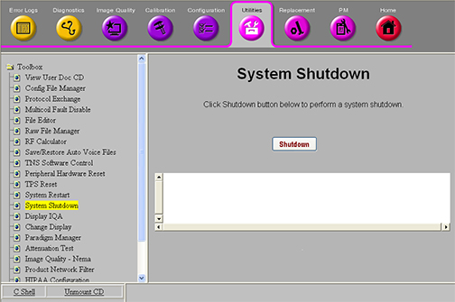

Operating Documentation
Direction 5670000, Rev# 1
Module Version 5.0, Version Date 10/5/09
Operating Documentation |
| ||||
| ELECTROCUTION HAZARD! | ||||
| HIGH VOLTAGE PRESENT. | ||||
| USE PROPER LOCK OUT / TAG OUT PROCEDURES BEFORE servicing and/or maintaining. |
| Condition | Reference | Effectivity |
|---|---|---|
Prior to powering down the entire RF and PEN cabinet, power off the Host. You can power down the RF Amplifier and PEN Cabinet when the power LED on the host computer is no longer lit. | - | - |
Time method for dissipation of stored energy – 5 minutes.
Visual inspection of Patient Handling Power Supply (PHPS) power switch.
Multimeter set to read voltage for verification of RF portion of PGR cabinet and PEN cabinet.
Personal lock and tag for each FE at the site working on the de-energized equipment.
Before removing power, power down the host first. In Common Service Desktop, select Utilities, Toolbox, System Shutdown (see Illustration 1) and click [Shutdown].
Illustration 1: System Shutdown

Prepare for shutdown of equipment. Notify affected personnel working in the area that LOTO is being performed.
Visually confirm that power is on.
At the front panel of the PDU, switch the PDM-RF circuit breaker to the OFF (DOWN) position. (See Illustration 5
At the front panel of the PDU covering the circuit breakers, apply a personal LOTO device for each FE working on the equipment. (See Illustration 5.)
Confirm that the power is OFF.
Verify that all energy has been dissipated.
Prepare for re-energizing the equipment. Notify affected personnel working in the area that LOTO is being removed.
Remove the personal LOTO device(s) from the front panel of the PDU.
At the front panel of the PDU flip the RF Subsystem/PEN Cabinet circuit breaker switches to the ON position.
Turn on the host computer.
Use sdc login to access host computer.